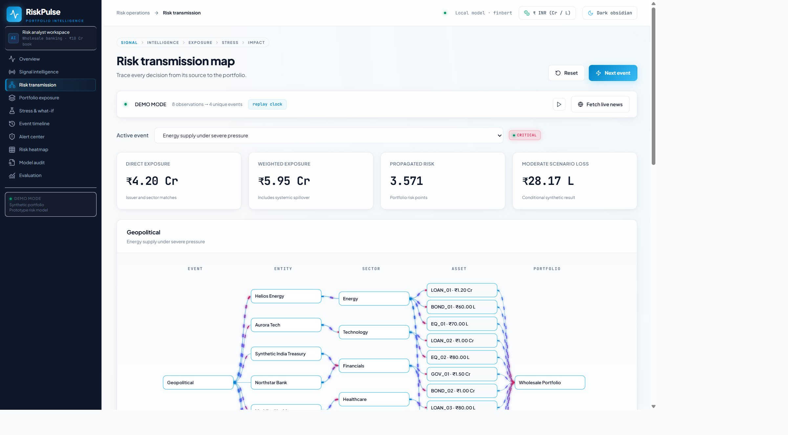
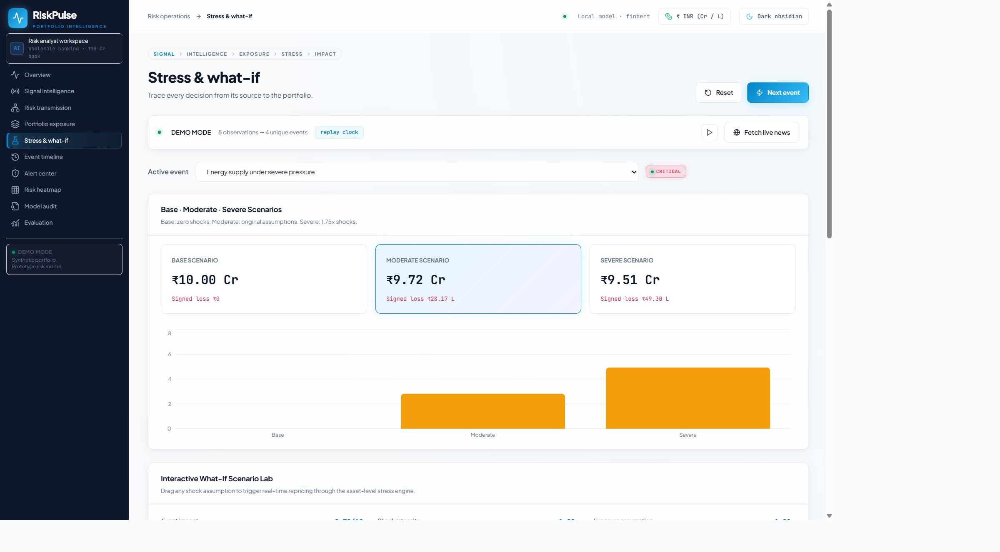

The gap
- 01Reports arrive without the book they affect.
- 02A repeated social post can look like a second event.
- 03Sentiment does not name the exposed positions.
- 04A loss total cannot be challenged without its assumptions.
S&P Global & Crisil Campus Hackathon 2026
From a headline to the positions that carry the exposure
Explainable risk intelligence for a synthetic wholesale-banking portfolio
Problem and approach
RiskPulse keeps severity, evidence, exposure, and loss as separate numbers.
Synthetic issuers, positions, and shocks. Public or synthetic text only.
System design
News and social
Clean and extract
FinBERT sentiment and event class
Fuse copies by credibility and recency
Map event to issuer, sector, and asset
Stress the synthetic book
Attribute the loss
Next.js interface, FastAPI services, SQLite evidence. One local process.
Implementation
Result


Conditional synthetic repricing. The moderate case is the original demo result.
Domain impact
Priority
Prioritise events, not headline volume. The copied social post did not raise confidence.
Exposure
See who is exposed before the scenario runs. Direct INR 42M, weighted INR 59.5M.
Challenge
Challenge the loss. Energy INR 1.679M. Largest name EQ_01 INR 0.582M. Audit shows the text, the weights, and the shock.
An analyst compares assumptions. The prototype does not forecast prices or capital.
Limits and next steps
Decision-support prototype. No market-prediction or regulatory-compliance claim.